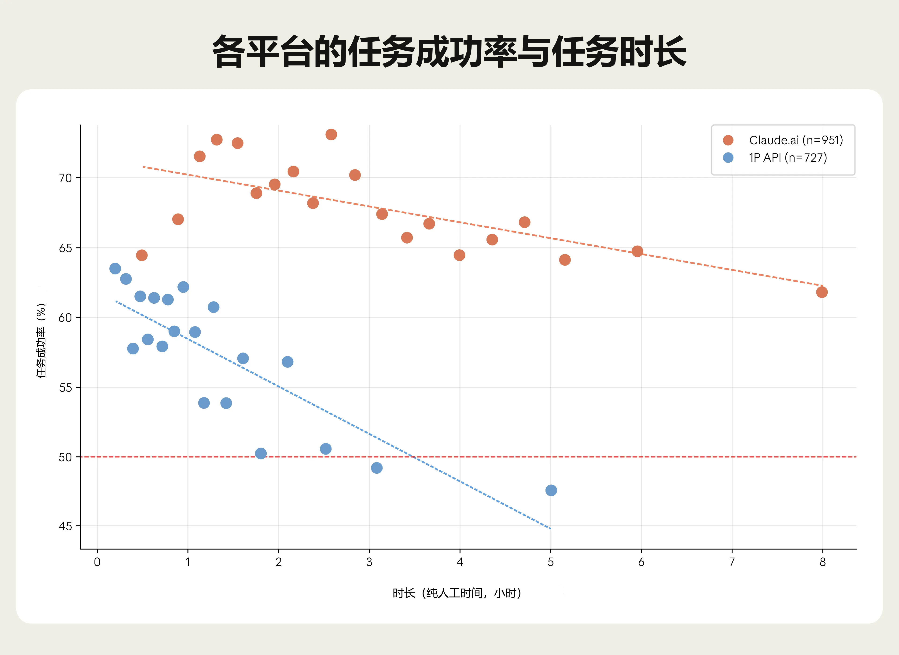
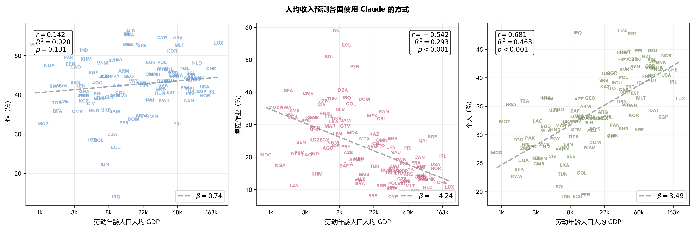
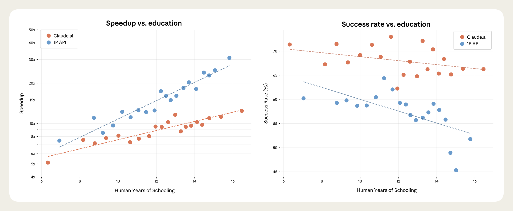
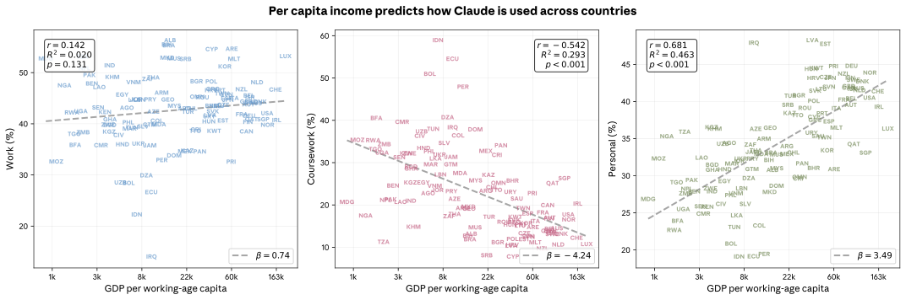
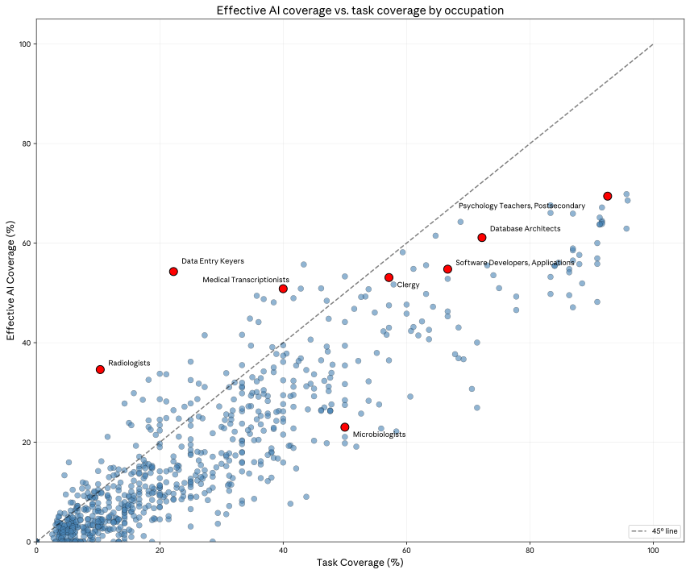

Anthropic 经济指数：理解 AI 使用的新积木
📖 中文摘要
专业术语注解
劳动生产率（labor productivity）：单位时间内产出价值的度量去技能化（deskilling）：职业中高技能任务被自动化取代后，剩余工作技能要求降低任务地平线（task horizon）：AI 能可靠完成的单次任务所对应的人工工作时长覆盖度（coverage）：职业中被 AI 使用涉及的任务所占比例采纳曲线（adoption curve）：新技术随经济发展在不同人群或国家逐步扩散的规律加权（weighting）：按任务重要性和发生频率调整统计结果的计算方法📄 中文全文
- 类别： 经济研究（Economic Research）
- 来源： https://www.anthropic.com/research/economic-index-primitives
经济研究（Economic Research）
2026 年 1 月 15 日
阅读完整报告
人工智能真的让人们在工作中更快了吗？AI 最擅长支持什么样的任务？它可能如何改变人们职业的性质？
在 Anthropic，我们正在持续测量现实世界中的 AI 使用情况，以回答诸如此类的问题。我们的隐私保护分析方法使我们能够更多地了解 Claude.ai 上的对话（捕捉消费者用途）和我们第一方 API 上的对话（主要捕捉企业用途）。1 在过去的报告中，我们按职业和工资水平评估了 AI 任务，更仔细地研究了软件开发，并按国家和美国各州研究了 AI 使用。
我们现在为经济指数增加了一层新的细节。在我们的第四份报告中，我们引入了我们所说的经济原语（economic primitives）：一组五个简单、基础性的测量指标，用于跟踪 Claude 随时间的经济影响。我们的初始集合包括任务复杂度、技能水平、用途（工作、教育或个人使用）、AI 自主性和成功率。2 我们通过让 Claude 对我们本报告样本中的每次对话回答一组共同的问题来推导这些原语。
这些原语提供了 AI 潜在经济影响的先行指标——并使我们能够回答关于 AI 如何已经在改变工作的远为复杂的问题。我们最新的报告抽样了 2025 年 11 月的对话（主要使用 Claude Sonnet 4.5），使用我们的原语探索了我们原本无法回答的广泛问题——包括 Claude 在更复杂任务上的任务级成功率如何变化，以及迄今为止对 Claude 的使用是否可能预示着许多工作将出现净"去技能化"（deskilling）效应。
您可以在此阅读第四份经济指数报告。下面，我们总结其结果。
我们从经济原语中学到了什么
我们将经济原语应用于关于单个任务、职业的问题，然后是我们观察到的变化可能产生的总体影响。（我们的完整方法——包括我们如何测试原语准确性的细节——在完整报告的第二章中描述。）
任务
AI 加速了哪些任务，加速了多少？
我们发现，更复杂的任务被 Claude 加速得最多。我们通过 Claude 估计的理解对话输入所需的受教育年限来衡量这一点：在 Claude.ai 中，提示需要高中教育（12 年）的任务被加速了 9 倍，而需要大学学位（16 年）的任务被加速了 12 倍。（在 API 上，加速幅度更大。）这些结果表明，AI 的生产率收益目前正流向需要相对较高人力资本的任务，这与证据表明白领专业人士更可能在工作使用 AI 是一致的。
当我们针对任务的成功率进行调整时，同样的趋势仍然成立——尽管形式较弱。Claude 成功完成需要大学学位的任务的比例为 66%，而需要低于高中教育的任务为 70%。这减少了但并未消除总体效应：Claude 对任务加速的影响随复杂度的增长比复杂度与成功率下降的相关性更陡峭。
 加速和成功率与人类受教育年限的关系。 左图显示加速与人类受教育年限之间关系的散点图，在 O*NET 任务层面测量。虚线显示最佳拟合线。右图显示与成功率的关系。
加速和成功率与人类受教育年限的关系。 左图显示加速与人类受教育年限之间关系的散点图，在 O*NET 任务层面测量。虚线显示最佳拟合线。右图显示与成功率的关系。
Claude 可以支持的任务时间跨度是多少？
METR 对 AI 任务跨度的测量表明，更长的任务对 AI 模型来说更难完成。但随着模型变得更好，AI 模型可以工作的时间长度正在稳步增加：这一指标现在已成为 AI 进展的关键指标。 我们能够使用我们的经济原语补充 METR 的分析。在下面的图中，我们显示 Claude 的任务级成功率与人类完成相同任务所需时间的关系，包括 Claude.ai 和我们的 API：

任务成功率与人类单独完成时间。 此图显示任务成功率（%）与任务要求人类单独完成的时间之间的关系，均在 O*NET 任务层面测量并按平台拆分。虚线显示线性回归的拟合。 METR 的基准表明，Claude Sonnet 4.5（我们自己分析中的模型）在 2 小时的任务上达到 50% 的成功率。相比之下，我们自己的 API 数据发现，Claude 在需要近两倍时间（约 3.5 小时）的任务上成功率为 50%，而在 Claude.ai 上，时长还要长得多——约 19 小时。但这可能并不像看起来那么不一致：我们的方法与 METR 在一些重要方面不同。在我们的样本中，用户可以将复杂任务分解为更小的步骤，形成允许 Claude 纠正方向的反馈循环。而且，我们的样本包含一种选择偏差，而不是固定的一组任务：用户带到 Claude 的是他们更有信心会成功的任务。 我们的分析显示，Claude 的_有效_时间跨度可能与使用一致任务集的研究中发现的不同。我们将在后续报告中跟踪这一指标。Claude 的工作性质如何随国家而变化？
我们发现，在不同经济发展阶段的国家，Claude 完成的任务类型非常不同。在人均 GDP 较高的国家，Claude 更频繁地被用于工作或个人使用——而处于另一端光谱的国家更可能将其用于教育课程作业。这符合一个直白的"采用曲线"叙事：低收入国家在教育和较少的工作任务上显示出很大的 AI 使用份额，而随着国家变得更富裕，AI 使用向个人用途多样化。 这些结果与微软最近的工作一致，该工作将教育中的 AI 使用与较低的人均收入联系起来，将休闲中的 AI 使用与较高收入联系起来。我们与卢旺达政府和科技培训提供商 ALX 的近期合作正是考虑到这一点而设计的：参与者从培养 AI 素养开始，我们正在试点一个项目，为一些毕业生提供一年的 Claude Pro 访问权限，支持从教育用途向更广泛应用的过渡。

人均收入预测各国使用 Claude 的方式。 每个图显示 Claude.ai 对话中特定种类使用（工作、课程作业或个人）的份额与人均 GDP 对数之间的关系。职业
覆盖率
在我们的第一份报告中（使用 2025 年 1 月的数据），我们发现样本中 36% 的职业看到 Claude 被用于其至少四分之一的任务。汇总各报告的数据后，这一比例上升到 49%。但一旦我们计入 Claude 的_成功_ 率（我们按工人执行该任务的频率和任务所需时间加权），我们对哪些职业受 AI 使用影响最大就有了不同的图景。
在下面的图中，我们沿 x 轴绘制了较早的职业任务覆盖率度量，沿 y 轴绘制了我们新的调整后度量。虽然两者肯定相关，但我们现在发现，一些职业（如数据录入员和放射科医生）受 AI 的影响比任务覆盖率单独显示的严重得多，而另一些（如教师和软件开发人员）相对受影响较小。
 有效 AI 覆盖率与任务覆盖率。 该图显示任务有效 AI 覆盖率（%）与任务覆盖率之间的关系，在职业层面测量。有效 AI 覆盖率跟踪工人按时间加权的职责中 AI 能够成功执行的份额，基于 Claude.ai 数据。任务覆盖率是出现在 Claude.ai 使用中的任务份额。虚线显示有效 AI 覆盖率份额等于任务覆盖率的位置。
话虽如此，即使我们修订后的评估仍然有限：我们只评估在 Claude.ai 上执行的任务，而且这些对话如何映射到现实世界的变化并不总是清楚。这是我们计划未来进一步深入研究的领域。
有效 AI 覆盖率与任务覆盖率。 该图显示任务有效 AI 覆盖率（%）与任务覆盖率之间的关系，在职业层面测量。有效 AI 覆盖率跟踪工人按时间加权的职责中 AI 能够成功执行的份额，基于 Claude.ai 数据。任务覆盖率是出现在 Claude.ai 使用中的任务份额。虚线显示有效 AI 覆盖率份额等于任务覆盖率的位置。
话虽如此，即使我们修订后的评估仍然有限：我们只评估在 Claude.ai 上执行的任务，而且这些对话如何映射到现实世界的变化并不总是清楚。这是我们计划未来进一步深入研究的领域。
任务内容
我们提出的另一个问题是，AI 覆盖的任务代表给定职业中技能较高还是较低的组成部分。使用我们创建的每个任务所需技能水平的估计，我们发现 Claude 相对更可能覆盖需要_更高_教育水平的任务——具体来说，需要平均 14.4 年教育（相当于美国副学士学位）的任务，而经济体的平均水平为 13.2 年（如下所示）。这与我们早先发现白领工人更频繁使用 Claude 一致。
 所有任务的教育水平与 Claude 覆盖的任务。 蓝色条形给出 O*NET 数据库中所有任务所需预测任务级教育的分布（按就业加权）。橙色条形显示相同内容，但仅限于出现在 Claude.ai 数据中的任务。
作为一项实验，我们估计了移除这些 Claude 覆盖的任务将如何改变人们工作的任务构成。作为一阶效应，这将平均_去技能化_（deskill）工作，因为它会移除那些更高教育的任务。技术作家、旅行社代理和教师等职业会受到影响（正如我们在报告中进一步讨论的），尽管少数罕见的职业（如房地产经理）会看到相反方向的影响。
我们不一定在_预测_这种去技能化会发生：有可能_即使_ AI 完全自动化了它目前支持的任务，劳动力市场也会以这种分析未考虑的方式动态调整。（当然，随着模型改进，AI 覆盖的任务构成也会改变。）话虽如此，我们认为这为 AI 在不久的将来可能对职业产生的最直接影响提供了一个有用的信号。3
所有任务的教育水平与 Claude 覆盖的任务。 蓝色条形给出 O*NET 数据库中所有任务所需预测任务级教育的分布（按就业加权）。橙色条形显示相同内容，但仅限于出现在 Claude.ai 数据中的任务。
作为一项实验，我们估计了移除这些 Claude 覆盖的任务将如何改变人们工作的任务构成。作为一阶效应，这将平均_去技能化_（deskill）工作，因为它会移除那些更高教育的任务。技术作家、旅行社代理和教师等职业会受到影响（正如我们在报告中进一步讨论的），尽管少数罕见的职业（如房地产经理）会看到相反方向的影响。
我们不一定在_预测_这种去技能化会发生：有可能_即使_ AI 完全自动化了它目前支持的任务，劳动力市场也会以这种分析未考虑的方式动态调整。（当然，随着模型改进，AI 覆盖的任务构成也会改变。）话虽如此，我们认为这为 AI 在不久的将来可能对职业产生的最直接影响提供了一个有用的信号。3
总体影响
在我们早期的研究中，我们估计AI 的广泛采用可以在未来十年每年将美国劳动生产率增长提高 1.8 个百分点——约为趋势增长率的两倍。我们新的原语使我们能够重新审视这一分析。 仅基于我们对任务加速的估计，我们复现了早先的 1.8 个百分点增长的发现（即使我们加入 API 数据也是如此）。但当我们计入任务_可靠性_——即当我们按任务_成功_的概率调整任务级时间节省的估计时——我们对在 Claude.ai 上完成的任务的估计下降了约三分之一（降至每年 1.2 个百分点），对我们 API 上通常更具挑战性的任务的估计下降得略多（降至 1.0 个百分点）。 即使每年劳动生产率增长仅提高 1 个百分点，也仍然值得注意：它将使美国生产率增长回到 1990 年代末和 2000 年代初的水平。而且，正如我们在早期研究中提到的，这一总体估计没有考虑 AI 模型变得强大得多或工作中 AI 使用变得复杂得多的可能性——这些可能将数字推高很多。事实上，自我们的调查以来，随着 Claude Opus 4.5 的发布，Claude 已经变得强大得多。
我们先前指标的最新情况
除了原语之外，我们还收集了一轮关于我们在先前报告中一直在跟踪的指标的新数据。这使我们能够识别 2025 年 1 月至 11 月期间 AI 使用的趋势。在此，我们主要发现与先前分析结果相比只有微小的演变，先前分析指向 Claude 使用的不均衡分布。 首先，我们发现 Claude 的使用仍然高度集中在某些任务中：即使我们的样本在 Claude.ai 上包含 3,000 个独特工作任务，前 10 大任务占该集合的 24%，这一比例从 2025 年 1 月的 21% 稳步上升。更具体地说，计算机和数学任务继续主导 Claude 的使用：它们约占 Claude.ai 上所有对话的三分之一，以及我们 API 流量的近一半。 其次，我们新报告发现，增强（52% 的对话）已超过自动化（45%），成为 Claude.ai 上与 Claude 互动的最流行模式。这逆转了我们在 8 月样本中看到的情况（当时自动化以 49% 对 47% 领先），但当我们从更长的时间框架评估这个问题时，我们仍然看到_自动化_在任务中份额的缓慢上升：去年 1 月增强以 55% 对 41% 领先，3 月以 55% 对 42% 领先。 第三，我们最新的分析显示，AI 使用的地理集中（正如我们上次讨论的）仍然明显。美国、印度、日本、英国和韩国在 Claude.ai 总体使用中仍然领先，采用情况仍然可以很好地用人均 GDP 解释。话虽如此，在美国，我们观察到更大的变化：Claude 的使用在美国各州之间已变得明显更均匀分布。事实上，如果这一趋势持续下去，我们的模型预测 Claude 的使用将在两到五年内在全国范围内实现均等化。我们在报告中更详细地讨论了这个模型。
结论
我们最新经济指数报告最直接的结论是，AI 对全球劳动力的影响仍然高度不均衡：AI 使用仍集中在特定国家和职业中，而且正如任务覆盖率的证据所表明的，它对一些职业的影响与对其他职业的影响非常不同。 更一般地说，这份报告为我们提供了一个新的基线，用于比较我们未来的调查。随着 Claude 的改进，我们预计它将被要求承担更难的任务，而且它可能会取得更大的成功。我们还预计，随着任务变得更可靠，任务可能从 Claude.ai 迁移到 API（即从主要由消费者使用到主要由企业使用）——如果发生这种情况，考虑到企业采用对 AI 生产率效应的重要性，它将为我们提供另一个可能的经济影响迹象。通过我们的原语，我们将能够测量这类变化如何开始影响现实世界的结果，包括人们工作的性质，以及在这个快速技术转型时期谁（以及在何处）最可能受到影响。 与此同时，研究人员、记者和公众可以使用我们的数据来指导他们自己的研究和思考，并为我们可能需要的潜在政策回应提供实证基础。关于我们上面讨论的每个领域的更多细节，请参阅我们的完整报告。
脚注
- 与之前的报告一样，我们所有的分析都基于隐私保护分析。在整个报告中，我们分析了来自 Claude.ai Free、Pro 和 Max 对话的 100 万次对话的随机样本（我们也将此称为"消费者数据"，因为它主要代表消费者使用）和来自我们第一方（1P）API 流量的 100 万份转录（我们也将此称为"企业数据"，因为它主要代表企业使用）。
- 更具体地说，
- 任务复杂度捕捉到任务在复杂度上可能不同，包括完成它们需要多长时间以及它们有多难。O*NET 中的"调试"任务可能指 Claude 修复函数中的小错误，也可能指全面重构代码库——对劳动力需求有非常不同的影响。我们通过估计人类在没有 AI 的情况下完成任务的时间、使用 AI 完成任务所花的时间，以及用户是否在单个对话中处理多个任务来衡量复杂度。
- 人类和 AI 技能处理自动化如何与技能水平交互。如果 AI 不成比例地替代需要较少专业知识的任务，同时补充高技能工作，它可能是技能偏向型技术变革的另一种形式——增加对高技能工人的需求，同时取代低技能工人。我们测量用户是否可以在没有 Claude 的情况下完成任务，以及理解用户提示和 Claude 回应所需的受教育年限。
- 用途区分专业、教育和个人使用。劳动力市场效应最直接地来自工作场所使用，而教育使用可能预示未来劳动力在哪里建立 AI 互补技能。
- AI 自主性测量用户将决策权委托给 Claude 的程度。我们最新的报告记录了用户完全委托任务的"指令式"使用不断上升。跟踪自主性水平——从积极协作到完全委托——有助于预测自动化的步伐。
- 任务成功率测量 Claude 对其是否成功完成任务的评估。任务成功率有助于评估任务是否可以有效自动化（任务到底能不能自动化？）和高效自动化（自动化一个任务需要多少次尝试？）。也就是说，任务成功率对自动化劳动任务的可行性和成本都很重要。
- 事实上，一些历史证据表明，当自动化工作任务的技术出现在专利数据中时，受影响职业的就业和工资随后会下降。
相关内容
深入了解 Claude 的数学能力
一个未发布的 Claude 研究版本在与黎曼猜想相关的问题上取得了进展。它改进了黎曼 zeta 函数满足该猜想的零点比例这一长期存在的下界，将其从 41.6% 提高到 67.2%。 阅读更多
用 Claude 发现密码学弱点
密码学算法。第一次攻击显著削弱了 HAWK——一种为未来量子计算机能够破解现有标准的世界而构建的数字签名方案。第二次攻击发现了一种攻击缩减轮数 AES（使用最广泛的对称密码）的新方法。 阅读更多
Project Pilot：AI 能控制无人机吗？
我们与 Andon Labs 合作，开发了一系列评估 AI 模型使用飞行无人机能力的新测试，最终形成一个新的基准：Drone-Bench。 阅读更多
▸ 英文原文（点击展开）
Anthropic Economic Index: New building blocks for understanding AI use
- Category: Economic Research
- Source: https://www.anthropic.com/research/economic-index-primitives
Economic Research
Anthropic Economic Index: New building blocks for understanding AI use
Jan 15, 2026
Read the full report
Is artificial intelligence really making people faster at work? What sort of tasks does AI support best? And how might it change the nature of people’s occupations?
At Anthropic, we’re measuring real-world AI use on an ongoing basis to answer questions exactly like these. Our privacy-preserving analysis method allows us to learn more about conversations on Claude.ai (capturing uses by consumers) and our first-party API (mostly capturing uses by businesses).1 In past reports, we’ve assessed AI tasks by occupation and wage level, looked more closely at software development, and studied AI use by country and by US state.
We’re now adding a new level of detail to our Economic Index. In our fourth report, we’re introducing what we’ve called economic primitives : a set of five simple, foundational measurements to track the economic impacts of Claude over time. Our initial set includes task complexity, skill level, purpose (work, education, or personal use), AI autonomy, and success.2 We derive these primitives from asking Claude to answer a common set of questions about every conversation in our sample for this report.
These primitives provide a leading indicator of AI’s potential economic impacts—and allow us to answer far more complex questions about how AI is already changing jobs. Our latest report, which samples conversations from November 2025 (predominantly using Claude Sonnet 4.5), uses our primitives to explore a wide range of questions that we wouldn’t otherwise be able to answer—including how Claude’s task-level success rates change for more complex tasks, and whether the use of Claude to date might portend a net-deskilling effect on many jobs.
You can read the fourth Economic Index report here. Below, we summarize its results.
What we’ve learned from our economic primitives
We applied our economic primitives to questions about individual tasks, occupations, and then the possible aggregate impacts of the changes we observe. (Our full methodology—including details on how we tested the accuracy of our primitives—is described in chapter two of the full report.)
Tasks
Which tasks does AI speed up, and by how much?
We found that more complex tasks were sped up the most by Claude. We measure this by what Claude estimates as the number of years of schooling required to understand the conversation’s inputs: in Claude.ai, tasks with prompts requiring a high school education (12 years) were sped up by a factor of 9, while those requiring a college degree (16 years) were sped up by a factor of 12. (On the API, the speedup was greater still.) These results imply that AI’s productivity gains are currently accruing in tasks that require relatively high human capital, which is consistent with the evidence that white collar professionals are more likely to use AI at work. This same trend holds—albeit in weaker form—when we adjust for tasks’ success rates. Claude successfully completes tasks that require a college degree 66% of the time, compared to 70% for those tasks that require less than a high school education. This reduces, but doesn’t eliminate, the overall effect: Claude’s impact on task speedup scales more sharply with complexity than complexity correlates with a decrease in success rate.

Speedup and success rate vs. human years of schooling. The chart on the left shows a scatterplot of the relationship between speedup and human years of schooling, measured at the O*NET task level. The dashed lines show the line of best fit. The chart on the right shows the relationship with the success rate.What are the time horizons over which Claude can support tasks?
METR’s measure of AI’s task horizons shows that longer tasks are harder for AI models to complete. But the length of time over which AI models can work is steadily increasing as models get better: this measure has now become a key indicator of AI progress.
We’re able to complement METR’s analysis using our economic primitives. In the graph below, we show Claude’s task-level success rates relative to the amount of time a human would take to do the same task, both on Claude.ai and on our API:
Task success vs. human-only time. This chart shows the relationship between task success (%) and the time the task would require a human to complete alone, all measured at the O*NET task level and split by platform. The dashed lines show the fit from a linear regression.
METR’s benchmark suggests that Claude Sonnet 4.5 (the model in our own analysis) achieves 50% success rates on tasks of 2 hours. By contrast, our own API data finds that Claude is 50% successful at tasks that take nearly twice as long (around 3.5 hours), and on Claude.ai, the duration is vastly longer still—around 19 hours. But this might not be as discordant as it seems: our methodology is different to METR’s in some important ways. In our sample, users can break down complex tasks into smaller steps, creating a feedback loop that allows Claude to correct course. And rather than a fixed set of tasks, our sample contains a form of selection bias: users bring tasks to Claude that they’re more confident will work.
Our analysis shows how Claude’s effective time horizons might look different to those found in a study with a consistent set of tasks. We’ll track this indicator in further reports.
How does the nature of Claude’s work vary across countries?
We find that Claude completes very different kinds of tasks in countries at different stages of economic development. In countries with higher GDP per capita, Claude is used much more frequently for work or for personal use—whereas countries at the other end of the spectrum are more likely to use it for educational coursework. This fits a straightforward “adoption curve” story, in which lower-income countries show a large share of AI use on education and on a smaller number of work tasks, while AI use diversifies towards personal purposes as countries become richer. These results align with recent work by Microsoft that associates AI use in education with lower per-capita income, and AI use for leisure with higher incomes. Our recent partnership with the Rwandan government and ALX, a technology training provider, is designed with this in mind: participants begin by developing AI literacy, and we’re piloting a program for granting some graduates year-long access to Claude Pro, supporting the transition from educational use to a broader range of applications.

Per capita income predicts how Claude is used across countries. Each plot shows the relationship between the share of a specific kind of use (work, coursework, or personal) for Claude.ai conversations, and log GDP per capita.Occupations
Coverage
In our first report, with data from January 2025, we found that 36% of jobs in our sample saw Claude being used for at least a quarter of their tasks. Pooling data across reports, this has risen to 49%. But once we account for Claude’s success rate (which we weight according to how often workers do that task and how long the task takes), we get a different picture of which jobs are most affected by the use of AI. On the graph below, we plot that earlier measure of occupations’ task coverage along the x axis, and our new, adjusted measure on the y axis. Although the two are certainly correlated, we now find that some occupations (like data entry keyers and radiologists) are much more heavily affected by AI than task coverage alone would suggest, while others (like teachers and software developers) are relatively less affected.

Effective AI coverage vs. task coverage. The plot shows the relationship between task effective AI coverage (%) and task coverage, measured at the occupation level. Effective AI coverage tracks the share of a worker’s time-weighted duties that AI could successfully perform, based on Claude.ai data. Task coverage is the share of tasks that appear in Claude.ai usage. The dashed line shows where effective AI coverage share equals task coverage. That said, even our revised assessment is still limited: we only assess tasks that are performed on Claude.ai, and it’s not always clear how these conversations might map onto changes in the real world. This is an area we plan to dig into further in future.Task content
A further question we asked is whether the tasks that AI covers represent the higher- or the lower-skilled components of a given occupation. Using an estimate that we create of the skill level required for each task, we find that Claude is relatively more likely to cover the tasks that require higher education levels—specifically, tasks that require an average of 14.4 years of education (equivalent to a US associate’s degree), relative to the economy’s average of 13.2 (shown below). This aligns with our earlier finding that Claude is used more frequently by white-collar workers.
 Education level of all tasks vs. Claude-covered tasks. The blue bars give the distribution of the predicted task-level education required for all tasks in the O*NET database, weighted by employment. The orange bars show the same, restricting to tasks that appear in Claude.ai data.
As an experiment, we estimated how removing these Claude-covered tasks would shift the task composition of people’s jobs. As a first-order effect, this would deskill jobs on average, since it would remove those higher-education tasks. Professions like technical writers, travel agents, and teachers would be affected (as we discuss further in the report), though a rarer few (like real estate managers) would see effects going the other way.
We’re not necessarily predicting that this deskilling will occur: it’s possible that even if AI fully automated the tasks it currently supports, the labor market would dynamically adjust in ways that this analysis doesn’t account for. (Of course, as models improve, the composition of tasks that AI covers will change, too.) That said, we think this offers a useful signal as to the most immediate effects that AI might have on occupations in the near future.3
Education level of all tasks vs. Claude-covered tasks. The blue bars give the distribution of the predicted task-level education required for all tasks in the O*NET database, weighted by employment. The orange bars show the same, restricting to tasks that appear in Claude.ai data.
As an experiment, we estimated how removing these Claude-covered tasks would shift the task composition of people’s jobs. As a first-order effect, this would deskill jobs on average, since it would remove those higher-education tasks. Professions like technical writers, travel agents, and teachers would be affected (as we discuss further in the report), though a rarer few (like real estate managers) would see effects going the other way.
We’re not necessarily predicting that this deskilling will occur: it’s possible that even if AI fully automated the tasks it currently supports, the labor market would dynamically adjust in ways that this analysis doesn’t account for. (Of course, as models improve, the composition of tasks that AI covers will change, too.) That said, we think this offers a useful signal as to the most immediate effects that AI might have on occupations in the near future.3
Aggregate impact
In our earlier research, we estimated that the widespread adoption of AI could increase US labor productivity growth by 1.8 percentage points per year over the next ten years—around double the trend rate. Our new primitives allow us to revisit this analysis. Based on our estimates of task speedups alone, we replicated our earlier finding of a 1.8 percentage point increase (even when we added in our API data). But when we account for task reliability —that is, when we adjust our estimate of task-level time savings by the probability that the task is successful , our estimate falls by about one-third for tasks completed on Claude.ai (to 1.2 percentage points per year), and by slightly more (to 1.0 percentage points) for the typically more challenging tasks completed on our API. Even a 1 percentage point increase in annual labor productivity growth would still be notable: it would return US productivity growth to the rates of the late 1990s and early 2000s. And, as we mentioned in our earlier research, this top-line estimate does not account for the possibilities that AI models become much more powerful, or that the use of AI at work becomes much more sophisticated—which could push the number much higher. Indeed, since our survey, Claude has become substantially more powerful, with the release of Claude Opus 4.5.
Updates on our previous measures
In addition to our primitives, we collected a new round of data on the measures we’ve been tracking in our previous reports. This allows us to pick out trends in AI use over the course of 2025, from January to November. Here, we mostly find only small evolutions from the results of previous analyses, which pointed to an uneven distribution of Claude use. First, we find that the use of Claude has remained highly concentrated among certain tasks: even though our sample includes 3,000 unique work tasks on Claude.ai, the top ten account for 24% of the set, which has steadily increased from 21% in January 2025. More specifically, computer and mathematical tasks continue to dominate Claude use: they’re about a third of all conversations on Claude.ai, and nearly half of our API traffic. Second, our new report finds that augmentation (52% of conversations) has overtaken automation (45%) as the most popular pattern of interaction with Claude on Claude.ai. This is a reversal of what we saw in our August sample (when automation led by 49% to 47%), but, when we assess this question over a longer time-frame, we still see a slow rise in automation ’s share of tasks: augmentation led by 55% to 41% in January of last year, and by 55% to 42% in March. Third, our latest analysis shows that the geographic concentration of AI use (as we discussed last time) remains evident. The US, India, Japan, the UK, and South Korea still lead in overall Claude.ai use, and adoption remains well-explained by GDP per capita. That said, in the US, we’ve observed greater changes: Claude use has become noticeably more evenly distributed across US states. In fact, if this trend was sustained, our model predicts that Claude use would be equalized across the country within two to five years. We discuss this model in more detail in the report.
Conclusion
The most immediate conclusion from our latest Economic Index report is that the impact of AI on the global workforce remains a highly uneven one: AI use remains concentrated in specific countries and occupations, and it affects some occupations in a very different way to others, as the evidence on task coverage suggests. More generally, this report has given us a new baseline against which to compare our future surveys. As Claude improves, we expect it’ll be asked to take on harder tasks, and that it’ll likely find greater success. We also expect that tasks might move from Claude.ai to the API (that is, from predominantly consumers to predominantly businesses) as they become more reliable—and if this happens, it’ll give us another possible indication of coming economic impacts, given the importance of business adoption for AI’s effect on productivity. Through our primitives, we’ll be able to measure how changes like these are beginning to impact real-world outcomes, including the nature of people’s work, and which people (and where) are likely to be most affected during this period of rapid technological transition. In the meantime, researchers, journalists, and the public can use our data to inform their own research and thinking, and to provide an empirical foundation for the potential policy responses we might need. For much more detail on each of the areas we’ve discussed above, see our full report.
Footnotes
- As with previous reports, all our analysis is based on privacy-preserving analysis. Throughout the report we analyze a random sample of 1M conversations from Claude.ai Free, Pro and Max conversations (we also refer to this as “consumer data” since it mostly represents consumer use) and 1M transcripts from our first-party (1P) API traffic (we also refer to this as “enterprise data” since it mostly represents enterprise use).
- More specifically,
- Task complexity captures that tasks can vary in their complexity, including how long they take to complete and how difficult they are. A "debugging" task in O*NET could refer to Claude fixing a small error in a function or comprehensively refactoring a codebase—with very different implications for labor demand. We measure complexity through estimated human time to complete tasks without AI, time spent completing tasks with AI, and whether users handle multiple tasks within a single conversation.
- Human and AI skills address how automation interacts with skill levels. If AI disproportionately substitutes for tasks requiring less expertise while complementing higher-skilled work, it could be another form of skill-biased technical change—increasing demand for highly skilled workers while displacing lower skilled workers. We measure whether users could have completed tasks without Claude, and the years of education needed to understand both user prompts and Claude's responses.
- Use case distinguishes professional, educational, and personal use. Labor market effects most directly follow from workplace use, while educational use may signal where the future workforce is building AI-complementary skills.
- AI autonomy measures the degree to which users delegate decision-making to Claude. Our latest report documented rising "directive" use where users delegate tasks entirely. Tracking autonomy levels—from active collaboration to full delegation—helps forecast the pace of automation.
- Task success measures Claude’s assessment of whether Claude completes tasks successfully. Task success helps assess whether tasks can be automated effectively (can a task be automated at all?) and efficiently (how many attempts would it take to automate a task?). That is, task success matters for both the feasibility and the cost of automating labor tasks.
- Indeed, some historical evidence suggests that when technologies automating job tasks appear in patent data, employment and wages subsequently fall for exposed occupations.
Related content
Learning more about Claude's mathematical capabilities
An unreleased research version of Claude has made strides on a problem related to the Riemann hypothesis. It improved a longstanding lower bound for the fraction of zeros of the Riemann zeta function that satisfy the hypothesis, increasing it from 41.6% to 67.2%. Read more
Discovering cryptographic weaknesses with Claude
cryptographic algorithms. The first attack significantly weakens HAWK, a digital signature scheme that was built for a future world where quantum computers are able to break existing standards. The second identifies a new way to attack round-reduced AES, the most widely used symmetric cipher. Read more
Project Pilot: Can AI control a drone?
Working with Andon Labs, we’ve developed a new series of evaluations that assess AI models’ ability to use a flying drone, culminating in a new benchmark: Drone-Bench. Read more